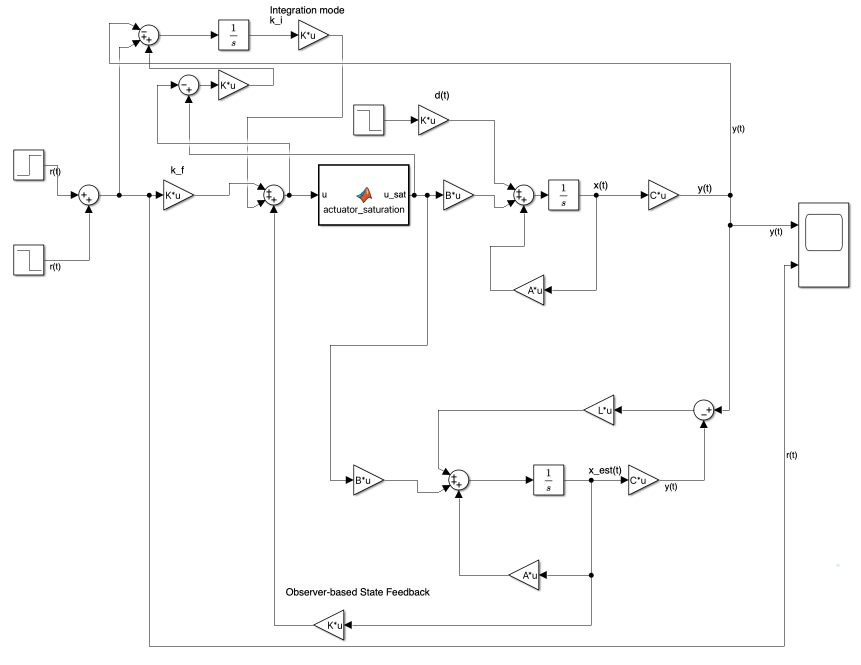
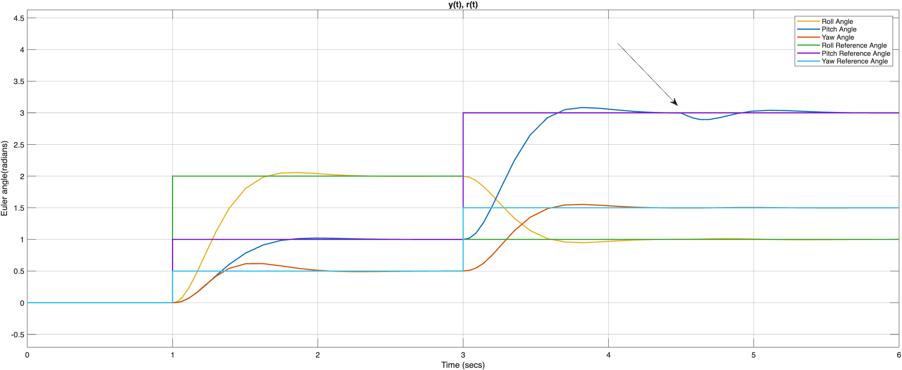

CONTROL SYSTEMS / ROBOTICS / DYNAMICS
Developed a mathematical model and cascaded feedback control architecture for a quadcopter UAV using state-space methods, MATLAB and Simulink.
This project investigates the dynamic modelling, simulation and control of a quadcopter unmanned aerial vehicle (UAV).
A nonlinear dynamic model was developed to describe the translational and rotational motion of the drone. The system was linearised around an operating point to enable state-space analysis and feedback controller design.
Developed a mathematical representation of quadcopter dynamics, considering the relationship between rotor-generated forces, torques and vehicle motion.
Designed a cascaded feedback control architecture to regulate the quadcopter's attitude and position. State-feedback control was used to influence the closed-loop dynamics and achieve the desired response.

Developed a state observer to estimate system states that are not directly measured by the available sensors.
Implemented the mathematical model and control architecture in MATLAB and Simulink to evaluate closed-loop system performance.
Tested the controller under different operating conditions, including reference changes, external disturbances, model uncertainty and actuator saturation.

Analysed the closed-loop response of the quadcopter through simulation, examining the performance of the controller and state observer.
Simulation results were used to investigate tracking accuracy, transient response, disturbance rejection and the limitations of the linearised model when applied to the full nonlinear system.
MATLAB · Simulink · State-Space Modelling · Control Systems · Pole Placement · PID Control · Observer Design · Nonlinear Dynamics